Hier zul je verschillende sites zien die ik gemaakt heb of waarin ik meegeholpen heb met de maak ervan.
CLE3 2022
Dit was voor een CLE project in 2022 waar we een plein kregen waarvoor wij een product moesten gaan verzinnen. Mijn team had er toen voor gekozen om een buurtapp te maken waar je mensen kan vinden die willen hangen en dan kun je zo mensen ontmoeten. Vandaar dat het Together We Are heet, ons doel is om mensen samen te krijgen omdat heel veel mensen die we geinterviewd hadden dat misten.
CLE4 2022
Wij moesten een game maken die gericht was op jonge kinderen uit groep 5, wij moesten de gaame zo maken dat de creativiteit bevorderd werd. Het begon heel lastig omdat elk concept wat we hadden afgekeurd werd, maar uiteindelijk zijn we met een goed concept gekomen. Kinderen kunnen door middel van dingen tekenen een platformer spelen, hierdoor moeten kinderen creatief nadenken hoe ze aan de overkant kunnen komen zonder dat wij vertellen hoe ze dat moeten doen.
CLE3 2023
De site is helaas een beetje erg kapot, maar ons doel was een restaurant ontwikkelen die helemaal op ouderen gespecialiseerd is. Zo zouden ouderen kunnen filteren wat ze kunnen eten, hun favoriete gerechten liken en net zoals in bijvoorbeeld een McDonalds de gerechten aan kunnen passen. Hier een voorbeeld afbeelding waar we uiteindelijk gestrand waren.
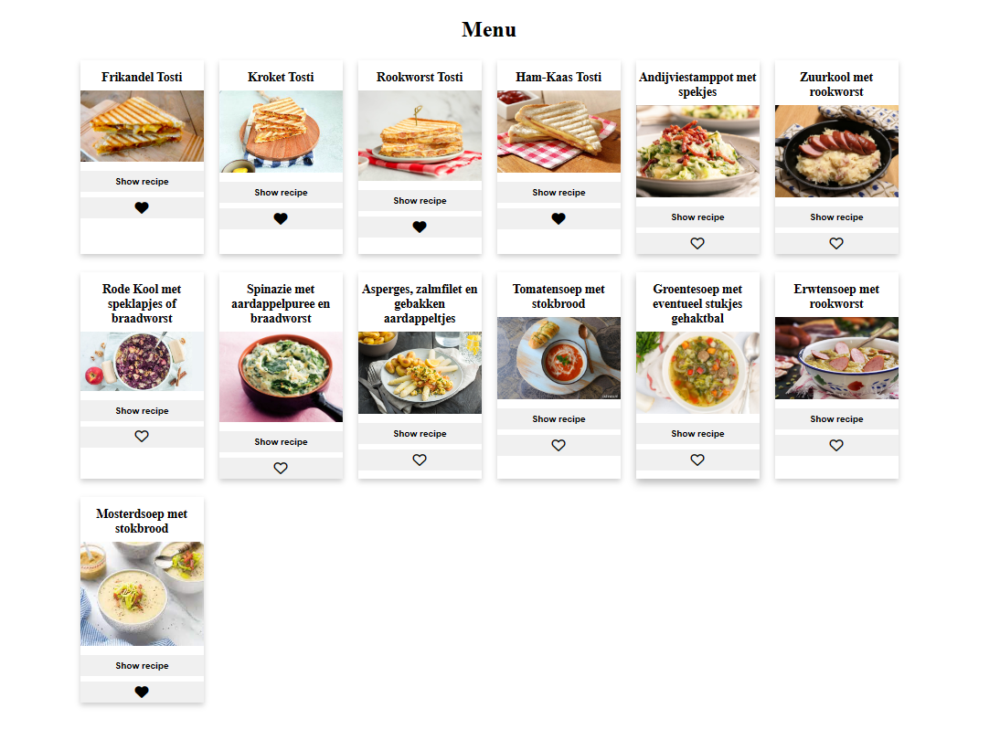 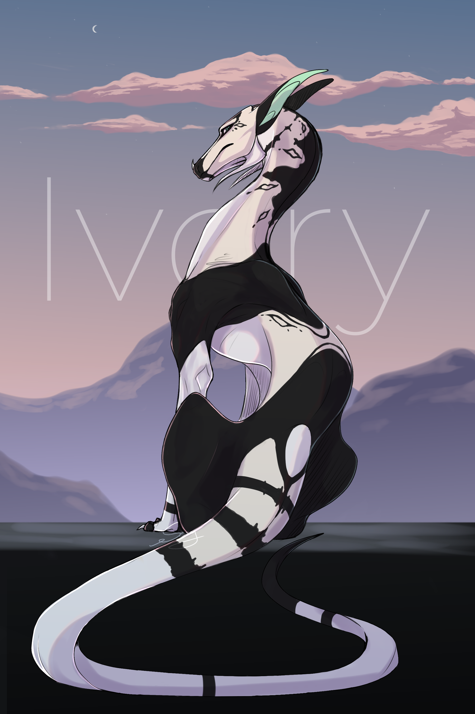
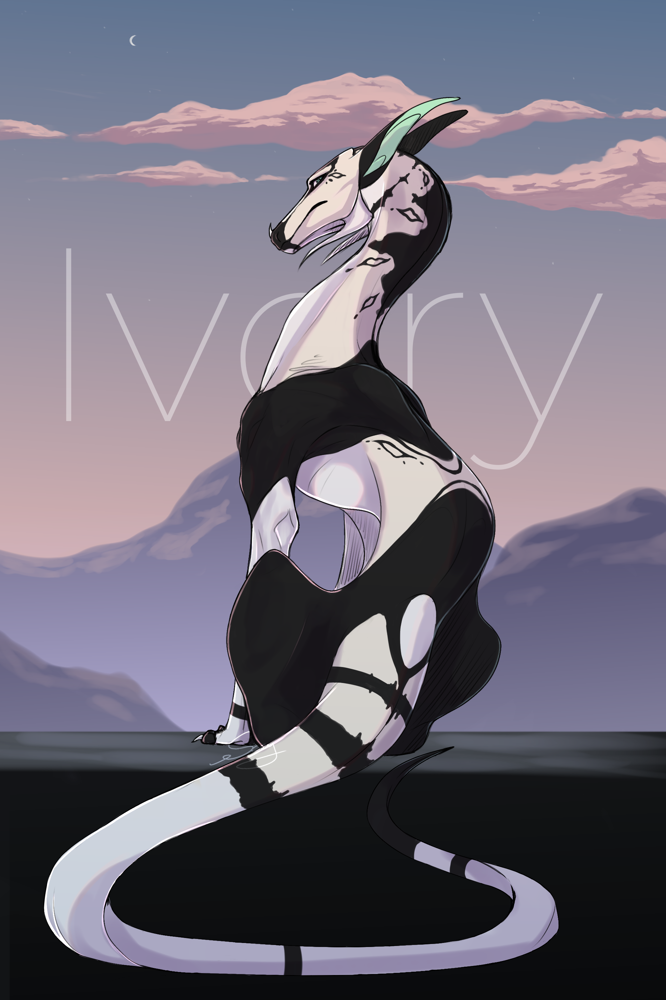
 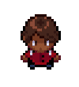
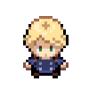
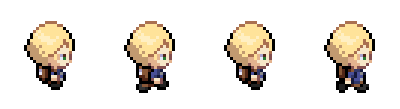
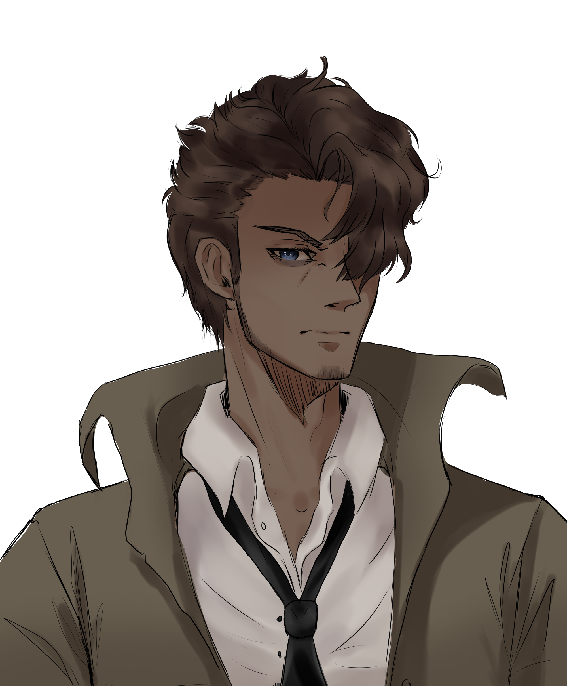
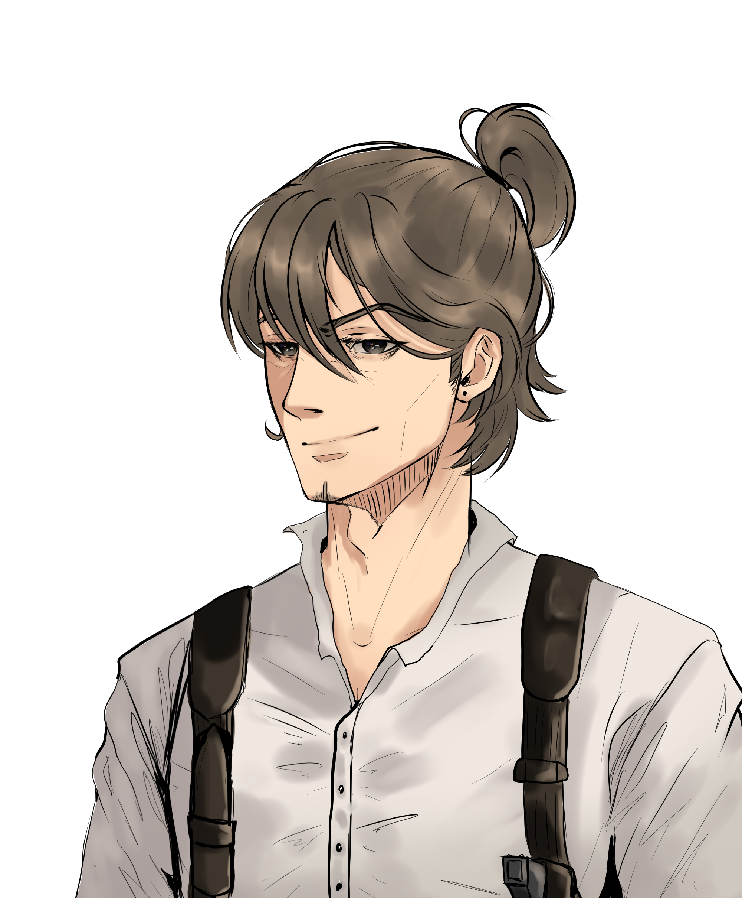
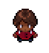
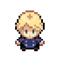
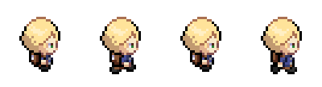
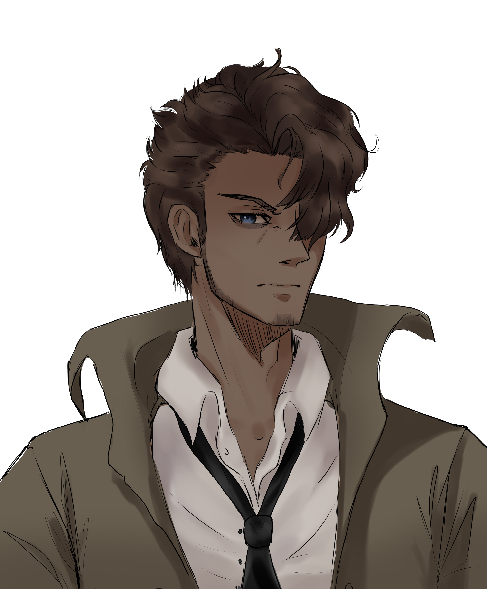
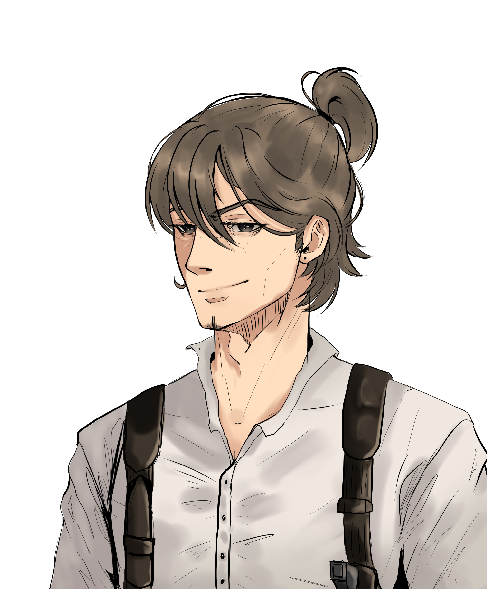